A community cuisine
Indo-Chinese Cuisine
Built by the Hakka Chinese of Calcutta over two centuries, and now cooked on every high street in India: a Chinese method run entirely on an Indian spice box.
Built by the Hakka Chinese of Calcutta over two centuries, and now cooked on every high street in India: a Chinese method run entirely on an Indian spice box.
The Chinese presence in Bengal begins in the late eighteenth century, with a trader remembered as Tong Achew who was granted land south of Calcutta around 17781 and set up a sugar mill with labour brought from China. The settlement that grew near it is still called Achipur, and the community still goes back there each Lunar New Year to the grave and the small temple. Migration continued through the nineteenth century and into the twentieth, in waves that were never large but were highly specialised: Cantonese carpenters and shipwrights, Hubei dentists and Shandong silk traders, and above all Hakka, who took up leather. By the 1940s Calcutta held the only substantial Chinese community in India, running tanneries, shoe shops, dental practices, laundries, beauty parlours and restaurants, and it had two Chinatowns. Tiretta Bazaar, in the centre of the city, is the older; Tangra, on the eastern edge, grew up around the tanneries and became the Hakka quarter.
This is a living community, and a much reduced one. After the Sino-Indian war of 1962 people of Chinese origin across India were arrested under the Defence of India Rules, and several thousand (including families who had been in the country for generations, and Indian citizens among them) were held at an internment camp at Deoli in Rajasthan2, some for years. Businesses and properties were lost, movement was restricted, and many of those released were deported or left for Canada, Australia and the United States. A Chinese population of perhaps twenty thousand in Calcutta at its height is now counted in the low thousands. Tangra's tanneries were ordered out of the city by the courts in the 1990s on pollution grounds, which took away the trade the quarter was built on; a number of the families who stayed converted their tannery buildings into restaurants. The early-morning Chinese breakfast market at Tiretta Bazaar and the Lunar New Year processions are what most Kolkatans now see of a community whose food the whole country eats.
What the Hakka kitchen brought was a method: very high heat, a seasoned wok, everything cut small and cooked in minutes, and a sauce built at the end from soy, vinegar and a cornflour slurry that tightens on contact with the pan. Hakka cooking in China starts out salty, browned and heavy on preserved and fermented things, and it met an Indian market that wanted more of all of it. Green chilli went in by the handful, along with ginger and garlic in quantities no Chinese recipe would recognise, and later dried red chilli, chilli sauce and tomato ketchup for colour and sweetness. Soy sauce was made locally, often darker and saltier than its Chinese equivalent. Coriander leaf and spring onion greens went on top.
The result reversed the direction of the original. Chinese cooking treats a stir-fry as a way of keeping the ingredient tasting of itself; Indo-Chinese treats it as a way of getting sauce onto something crisp. Cauliflower, paneer, chicken and potato are dipped in a cornflour-and-plain-flour batter, deep-fried hard, then tossed for a few seconds in a chilli-garlic sauce thickened until it clings. The cornflour slurry is the signature of the whole cuisine and the thing purists complain about: it gives the gravies their gloss and their body, and it is what makes a bowl of manchow or hot-and-sour soup in India sit thick on the spoon. Nothing about this is a mistake. It is a deliberate shift from subtle to loud, made by cooks who knew exactly which customers they were feeding.
The best-documented moment in the cuisine's history belongs to Nelson Wang, a Kolkata-born Chinese cook who had moved to Bombay and was working at the Cricket Club of India. In 1975 a customer asked for something not on the menu, and Wang built a dish the way an Indian kitchen would: chopped ginger, garlic and green chilli into the pan first, then soy sauce, then chicken, then cornflour and water to bind it. He called it manchurian, a name with no connection to Manchuria and chosen because it sounded Chinese. The formula turned out to be transferable to anything, and the vegetarian version (cauliflower florets battered, fried and tossed in the same sauce) travelled further and faster than the original. Gobi manchurian is now sold from carts in every city in the country, and in Bengaluru it is as much a street food as a restaurant dish.
Most of the other names on an Indo-Chinese menu work the same way. Schezwan, in India, means a red chilli-and-garlic paste built on dried Kashmiri or byadgi chillies, and has very little to do with the cooking of Sichuan. It usually contains no Sichuan pepper at all, and none of the numbing mala character that defines the real thing. Manchow soup, American chopsuey and chilli chicken have no originals abroad to be measured against either. American chopsuey is the clearest case: crisp fried noodles under a sweet tomato gravy, an Indian restaurant dish with an American name for a Chinese-sounding idea, and no American ever ate it. These are menu labels that Indian diners learned to read, and they now mean something precise to anyone ordering.
Indo-Chinese has no zone on Khaana's map, and cannot have one. Like Anglo-Indian food, it belongs to a community: a cuisine defined by who cooked it, carried wherever they went. Except that this one escaped its community almost completely. Two hundred Hakka families in Tangra invented a style that is now cooked by Punjabi, Bengali, Tamil and Nepali cooks in every state, at counters that have no connection to Kolkata at all. The chain runs from the pushcart with a single wok and a gas cylinder, through the "Chinese corner" attached to half the country's dhabas and the darkened Tangra-style restaurants with fish tanks, up to five-star hotel menus and packet seasoning sold in supermarkets. After Punjabi food it is arguably the most-eaten restaurant cooking in urban India.
This is not a poor copy of Chinese food. It is a cuisine that came out of a specific migration, a specific city and a specific trade, and it developed for fifty years in conversation with Indian tastes until it stopped answering to its parent. Chinese visitors do not recognise it and are not meant to. Judged as Chinese cooking it fails on every count; judged as itself it is coherent, technically demanding at the top end, and one of the few genuinely new Indian cuisines to appear in the last century. That it belongs to a community which has shrunk to a fraction of its former size, and which was treated badly by the country whose national restaurant food it created, is part of the record too.
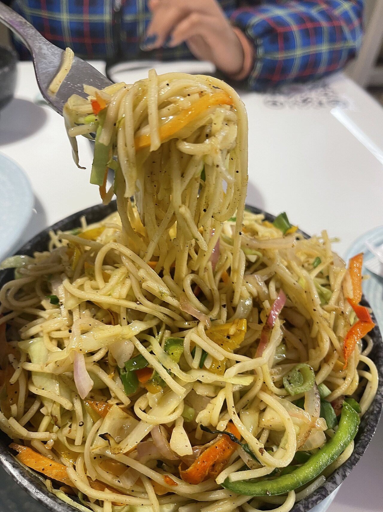
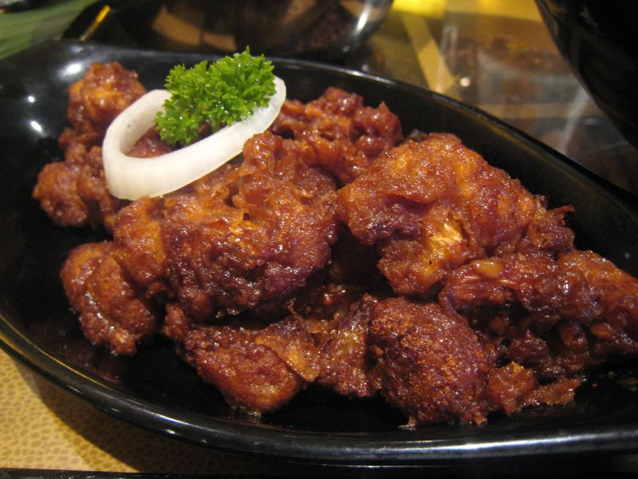
 American Chopsuey
American Chopsuey
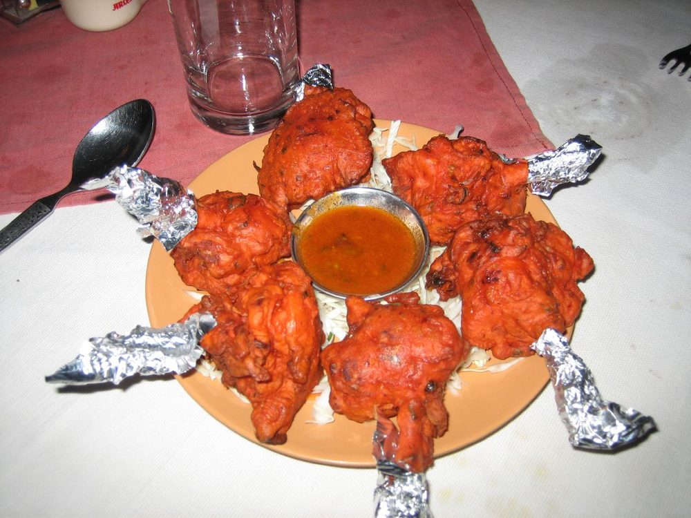
Chicken Lollipop Chicken Manchurian
Chilli Chicken
Chicken Manchurian
Chilli Chicken
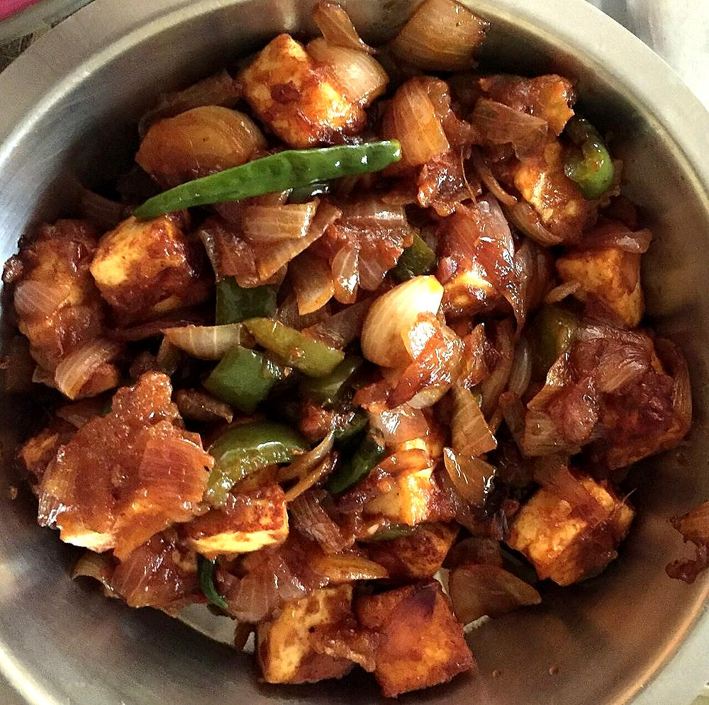
Chilli Paneer Chilli Tofu
Chilli Tofu
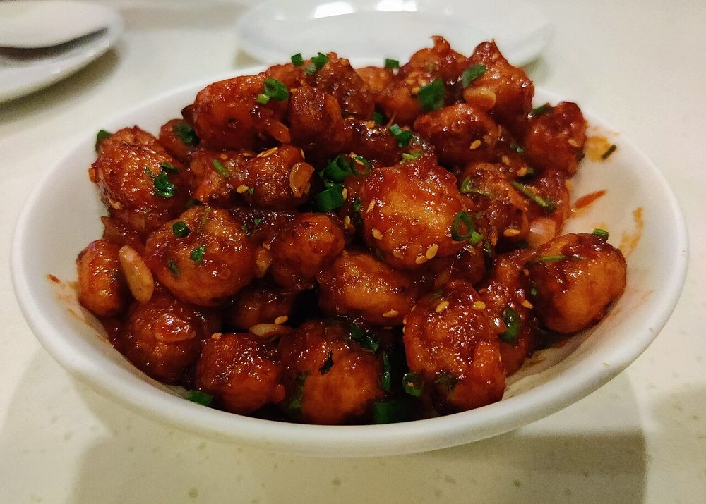
Crispy Chilli Baby Corn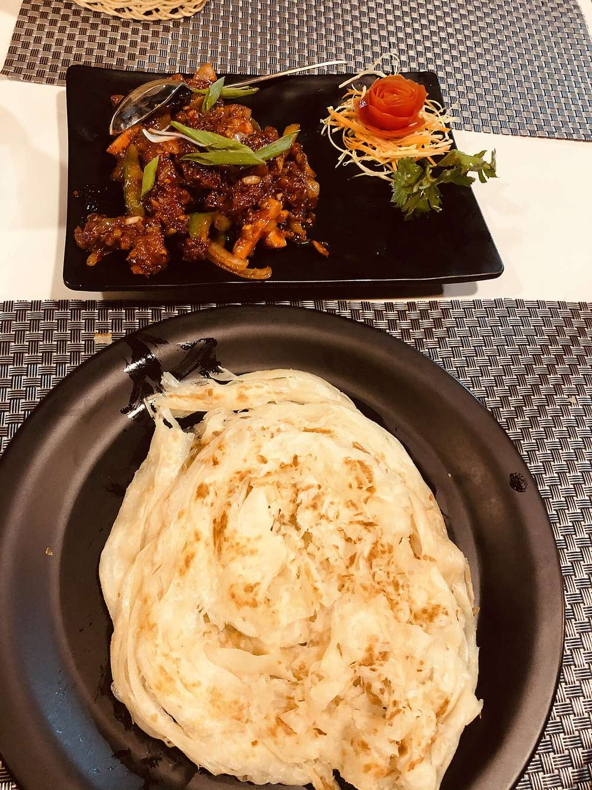
Dragon Chicken Gobi Manchurian Hakka Noodles Honey Chilli Potato
Honey Chilli Potato
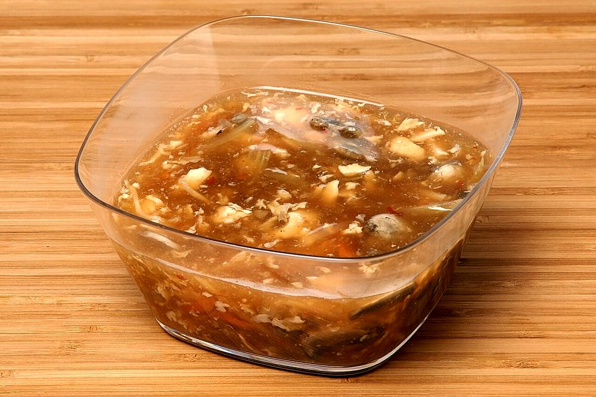
Hot and Sour Soup Manchow Soup
Manchow Soup
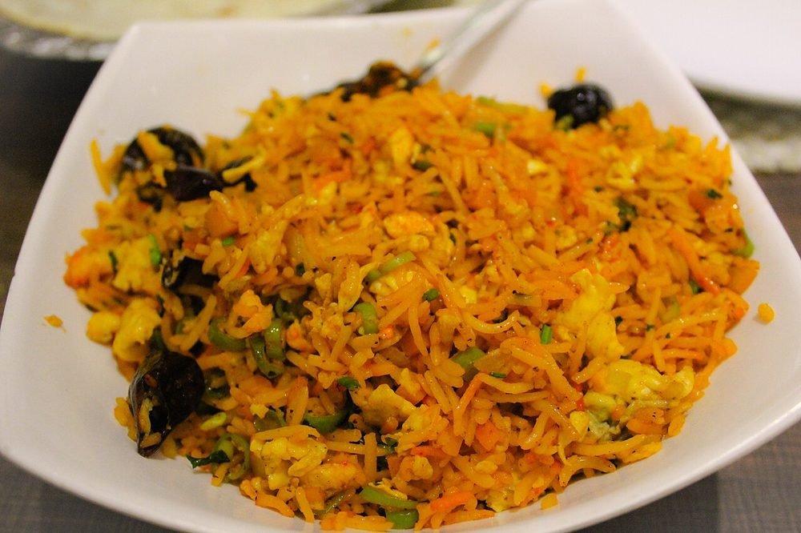
Schezwan Fried Rice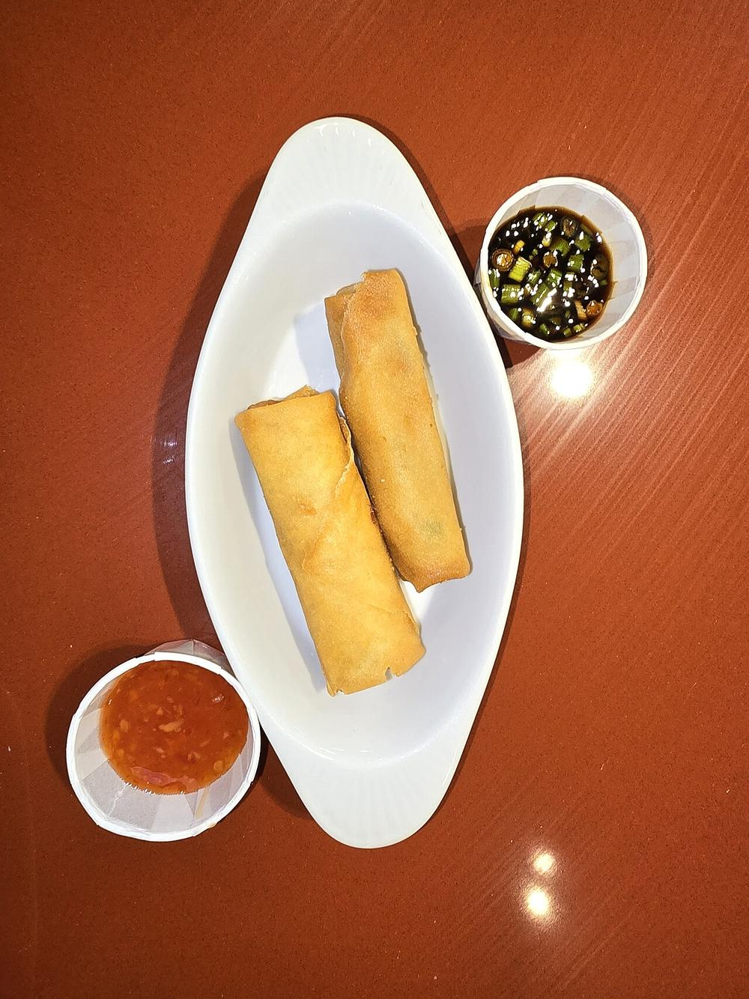
Spring Rolls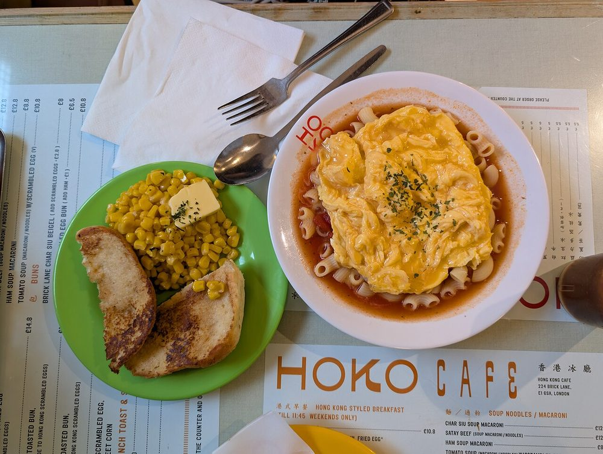
Sweet Corn Soup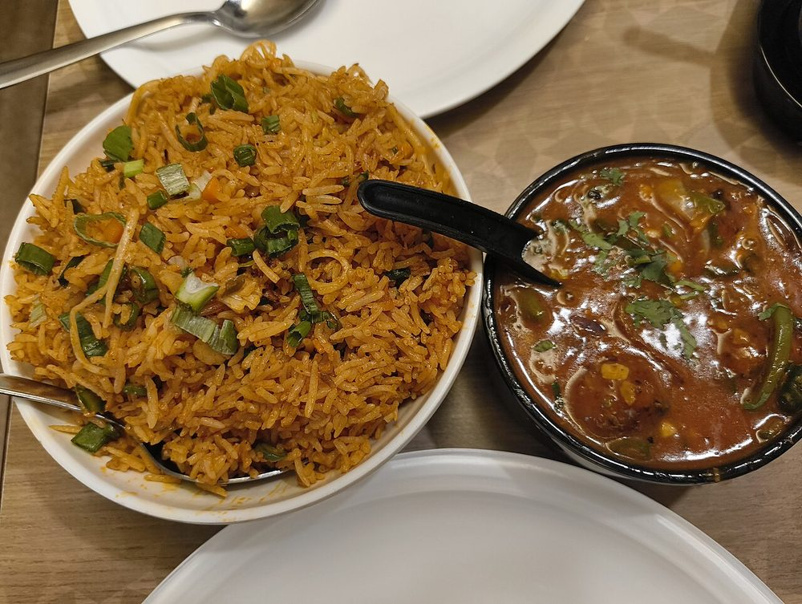
Triple Schezwan Rice Veg Manchurian in Gravy
Veg Manchurian in Gravy
 Wonton Soup
Wonton Soup
Not cooking tonight?
Tell us what is in your kitchen, and Khaana will help you cook an authentic Indian meal.